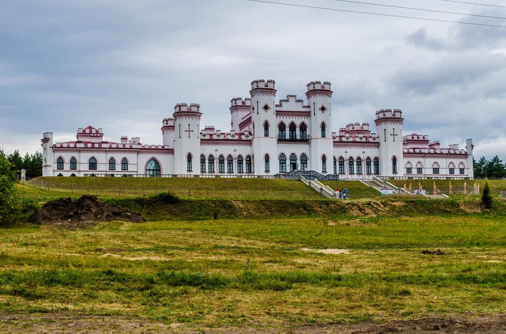

Дворец Пусловских

Местечко Коссово (сегодня Ивацевичский район, Брестская область) известно с 1494 года, когда великий князь литовский Александр Ягелончик подарил эти земли маршалку Яну Хрептовичу.
В течение нескольких столетий владельцами Коссово были именитые династии: Хрептовичи, Сангушки, Флемминги, Чарторыйские, Сапеги. А в 1821 году поместье купил Войцех Пусловский. Он основал в Коссово ковровую фабрику, в окрестностях построил или отреставрировал около 60 храмов.
Пусловские гордились соседством своего имения с усадьбой в урочище Меречевщина, где родился Тадеуш Костюшко – национальный герой Польши и США, почетный гражданин Франции.После Войцеха усадьбу унаследовал его сын Вандалин Пусловский – крупный промышленник и любитель искусств. Именно он в 1838 году начал в Коссово строительство роскошного дворца.Автором проекта стал выдающийся архитектор Франтишек Ящолд, а во второй половине XIX века над реконструкцией работал Владислав Маркони.

Коссовский дворец по-своему уникален. Здание состоит из центрального двухэтажного корпуса и двух боковых крыльев, а благодаря граненым зубчатым башням его часто называют миниатюрным замком.Каждая башня символизировала месяц года, при этом 4 центральные – в честь урожайных мая, июня, июля и августа – самые высокие.
Во дворце более 100 помещений, и ни одного проходного. Благодаря системе коридоров и особому расположению окон, на протяжении двух с половиной дней в году солнечный свет полностью заливал один из покоев. В это время хозяева праздновали День комнаты, по-особому украшая ее и проводя там много времени.
Коссовский дворец славился роскошными залами: в Белом – гости танцевали на шумных балах, в Черном – играли в карты, в Розовом – музицировали. Говорят, что был и вовсе удивительный для тех времен Парадный зал, где прямо под стеклянным полом среди водорослей плавали рыбки. Современные реставраторы этот факт еще не подтвердили, но уверены: полы с подогревом точно были.
Дворец окружал прекрасный парк, где росли более 150 видов экзотических растений, а для особо редких экземпляров устроена оранжерея. Парк живописно спускался к трем искусственным озерам и усадьбе Костюшко. После Леонарда Пусловского, проигравшего имение в карты, Коссово не раз переходило к новым хозяевам. В годы Первой мировой войны дворец разграбили, многие ценности вывезли за границу. С 1921 г. здесь размещались управление округом и школа пчеловодов.
Наибольшие разрушения дворец пережил во время Второй мировой войны. Многодневный пожар в 1944 г. окончательно уничтожил убранство залов, оставив лишь величественные стены. С дворцом в Коссово связано много преданий. Местные жители рассказывали, что для охраны хозяева держали льва, которого ночью выпускали бродить по коридорам.
Вспоминают и "музыкальную" особенность дворца. Если на втором этаже восточной стороны, став на подоконник, кто-то громко хлопал в ладоши, своды здания начинали издавать мелодичные звуки. А одна из самых красивых легенд гласит, что между Коссовским дворцом и резиденцией Сапегов в Ружанах существует подземный ход "шириною в карету и тройку" и длиной 25 километров.
Дворец Пусловских сегодян
Застывшая в камне красота Коссовского дворца по-прежнему впечатляет и привлекает путешественников. После многих лет забвения этот "миниатюрный замок" с 12 башнями, символизирующими месяцы года, вновь принимает гостей. Большая реставрация ещё продолжается, но оценить красоту дворца и прогуляться по залам, которые ждут возвращения былой роскоши, может каждый.
Сейчас временная экспозиция размещена в пяти залах. В холле – рассказ о здешних местах, которые славятся и другими достопримечательностями (среди них, например, расположенная рядом усадьба героя нескольких стран Тадеуша Костюшко). Белый зал посвящён семейной истории бывших владельцев Коссово – графов Пусловских. Ещё два зала – о событиях минувшего века и современной реконструкции. Пятый зал стал выставочным.
По планам реставраторов, впереди ещё огромная работа по восстановлению интерьеров дворца. Кроме того, в левом крыле разместится гостиница, в правом – ресторан, а территория вокруг должна вновь превратиться в прекрасный парковый ансамбль.
Туристов со всего мира принимает и расположенный рядом дом-музей Тадеуша Костюшко, который был восстановлен и открыт в 2004 г. Интересно, что в 1857 году именно Пусловские впервые отреставрировали заброшенную усадьбу Костюшек. Коссовский замок включен в ряд экскурсионных маршрутов Беларуси.
Как добраться